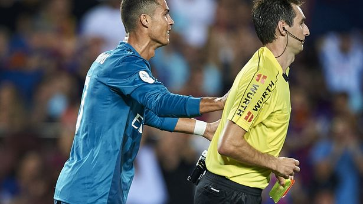

Shoving the Ref in the Spanish Super Cup
Background: 13 August 2017, first leg of the Spanish Super Cup, Real Madrid away to Barcelona at Camp Nou. El Clásico was already at boiling point, with Madrid fresh from the 2016-17 La Liga and Champions League double; Ronaldo came off the bench and within 24 minutes produced the season's most controversial sequence — goal, dive, ref-shove. A treble that shocked football.
The three minutes: In the 78th minute Ronaldo nutmegged Piqué and crashed a left-footed shot into the net — Real 2-1 up. Barely a minute later, after contact with Umtiti in the box he embellished the fall, and referee Ricardo de Burgos Bengoetxea ruled it a dive — a second yellow card, and off he went. A rare straight dismissal for Ronaldo in El Clásico.
Shoving the referee: Furious at the call, the freshly dismissed Ronaldo shoved referee De Burgos from behind with enough force to send the official stumbling forward. The shove was logged in the referee's post-match report: 'After being sent off, the player pushed me from behind, hard enough to unbalance me.' A physical assault on a match official, from behind — well beyond ordinary protest.
Additional sanction: On 14 August 2017 the Spanish FA's competition committee delivered its verdict: one match for the red card itself, four more for the shove — a five-match ban in total. Under FA rules shoving a referee can draw four to twelve additional matches, so five sat in the relatively moderate range. Real appealed; the Spanish appeals committee upheld the ruling on 21 August.
Commentary: CCTV's 'Morning News' ran a special segment on the incident, stressing that 'physical contact with a referee, however slight, must be severely punished'. A Zhihu column argued: 'Ronaldo clearly shoved the referee and made him visibly feel it… even if not malicious, it's a foul.' Real fans found the punishment too harsh; Barcelona fans thought a shove on a referee deserved more. Former referee Luca Marelli and other experts broadly agreed the five-match ban was justified and necessary.
Historical significance: The 11th red card of Ronaldo's Real Madrid career, all competitions counted, and the most controversial — not only for the shove, but for the stage it landed on: El Clásico. Messi picked up a handful of red cards across 21 years at Barcelona; by contrast, Ronaldo's discipline was under scrutiny once again. Madrid won the match 3-1 and lifted the Super Cup, then began the new season without their biggest star — the price of Ronaldo's impulsiveness.
Reaction: The Spanish press hammered him; Marca and AS headlined it a disgrace. The shove became the defining image of his lack of self-control.